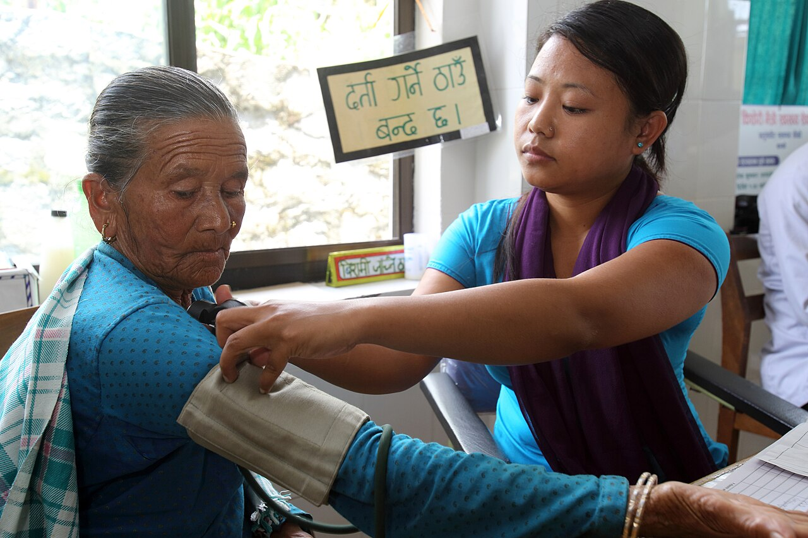

Accessible by design
Healthcare interfaces should be understandable to people with different levels of digital literacy. That means plain language, forgiving forms, and layouts that work on a modest phone.
My Story , why I built HelloDoc
An idea shaped by growing up around gaps in healthcare access, and a journey to explore how technology could help bridge them.
This page is the personal account. What the platform does is on About HelloDoc.
01 / The beginning
In the rural municipality where I grew up, three villages depended on a health post without a doctor. Accessing healthcare was not always as simple as it should have been. People struggled to understand their symptoms, find reliable guidance, and know where to turn for help.
I kept thinking about a question: what if technology could make that first step toward healthcare easier, even for someone living far from a hospital?
That question became HelloDoc.
The gap I kept noticing was not only about buildings or equipment. It was about information: knowing whether a symptom is something to watch, something to ask about, or something that needs care today , and knowing who to ask when the nearest doctor is a long way away.
I was already interested in building software, and I wanted that interest to point at something concrete. HelloDoc became the place where those two things met: a problem I had seen for myself, and the tools I was learning to use.
I am not a clinician, and this project is not a clinical claim. It is an attempt to explore , carefully and honestly , what a small piece of software can and cannot do for someone trying to take the first step.
What if where you lived didn’t determine how easily you could take the first step toward healthcare?
02 / The build
I wanted to explore how software could bring symptom guidance, doctor discovery, and appointment related experiences together in one place. HelloDoc became a way to turn that question into an engineering project.
Recognising barriers to accessing healthcare in underserved communities.
Distance is only one barrier. Uncertainty about symptoms, cost, travel time, and not knowing who to ask all shape whether someone seeks care at all.
Exploring a digital healthcare platform that combines symptom assessment and access to care.
The idea was never to replace a clinician. It was to make the first step clearer: describe what you feel, get preliminary guidance, and see where to go next.
Building a web interface, backend services, and a machine learning based symptom prediction pipeline.
In practice that meant a static front end, an Express service handling accounts and development routing, and a separate Flask service that loads a saved classifier and its reference datasets.
Improving the experience through better validation, accessibility, and potential real world collaboration.
These are intentions, not finished work. The honest next steps are evaluation on representative data, usability testing with real people, and conversations with people who deliver care.
03 / The philosophy
Healthcare interfaces should be understandable to people with different levels of digital literacy. That means plain language, forgiving forms, and layouts that work on a modest phone.
Connectivity, device limitations, affordability, and the needs of underserved communities have to be considered from the beginning , not retrofitted at the end.
Machine learning can help organise information and offer preliminary guidance, but responsible healthcare requires clinical expertise, appropriate validation, and clear limits.
Accessibility, privacy, reliability, and medical safety are engineering requirements here, not optional enhancements , and each one costs something.
Being explicit about this: the current build does not yet claim to have solved all of these. Several are directions, not finished work.
04 / Under the hood
Behind the interface is a combination of web technologies, backend services, structured health related datasets, and a machine learning classifier.
Accounts additionally use bcrypt password hashing, JSON Web Tokens, and server side sessions. A separate React + Vite chatbot app lives in the repository and talks to a generative API endpoint configured through an environment variable.
Select a step to read what it does, or play the flow to watch the sequence. The account lane is shown separately because signing in and predicting are independent paths.
Showing the full path. Select any step for detail.
This lane never touches the classifier, and a symptom check never requires an account.
Select a step above to see what it does in the current implementation.
The predictor page collects symptoms and posts them to /predict. In
the current build the input is a tag field that accepts one symptom name at a
time, up to four.
Locally, backend/server.js serves the static site and proxies
/predict and /static to the Flask service on
127.0.0.1:5001. In production, vercel.json routes
/api/* to the Express service and everything else to the Flask app
service, so there is no proxy hop.
Algo/main.py exposes GET and POST
/predict. It splits the submitted string on commas, strips each
entry, and passes the list to the prediction helper.
A dictionary maps each known symptom name to a position. The service builds a zero filled array of 132 positions and sets a 1 for every recognised symptom, so the model receives a sparse binary vector. Unknown names are simply ignored.
The vector is handed to a scikit learn Support Vector Classifier loaded from
Algo/models/svc.pkl. The shipped model was trained with
kernel="linear" and C=1.0, classifies 41 categories,
and contains 267 support vectors.
predict() returns the index of one class, which is mapped back to a
disease name through a lookup table. Because the model was fitted with
probability=False, the service can only report a single label , it
has no calibrated confidence score to show.
The predicted name is used to filter pandas data frames for a description, precautions, medications, diet, and workout guidance. These are lookups on reference tables, not further machine learning inference.
Flask renders the results template with the prediction and the retrieved rows and sends the finished page back to the browser.
/api/auth/signup, /login, /current user,
and /logout hash passwords with bcrypt, issue a JSON Web Token, and
keep a server side session. The legacy /auth/* prefix is mounted on
the same router.
Accounts are stored in MySQL through a connection pool. Credentials come from environment variables, never from the repository, and the pool is created lazily so the service can still boot when the database is unreachable.
The Python service keeps a mapping between symptom names and feature positions. Selected symptoms are written into a binary vector: a 1 marks a selected symptom, and a 0 marks an absent or unselected one. The current implementation defines 132 symptom features.
The service loads a saved model from Algo/models/svc.pkl and calls its
predict() method. The classifier is a scikit learn Support Vector
Classifier (SVC) with a linear kernel, fitted with C=1.0 over
41 categories.
The predicted category is used to pull matching records from datasets holding descriptions, precautions, medications, diets, and workouts. Those rows are reference data retrieved after classification , not additional model predictions.
Illustrative , not a model output
The animation below uses a simplified three feature example to show the shape of the process. It is not a real prediction from the shipped model, and nothing here has been reviewed clinically.
Step 1 of 4
Technical disclosure. The current implementation uses a saved SVC model for preliminary symptom based classification. Its predictions are not confirmed diagnoses. Clinical accuracy and suitability require independent evaluation and appropriate medical oversight.
One detail worth stating plainly: the training notebook records a held out accuracy of 1.0 on its own 30% test split, and re running that protocol reproduces both the score and the model's 267 support vectors. A perfect score on a small, highly separable dataset is a sign that the benchmark is easy , not evidence that the tool is clinically accurate. No external or clinical validation has been performed.
Think of it as drawing a line. Every row of training data is a point in space , here, a list of 132 zeros and ones. Each point already carries a label: the disease it belongs to. A classifier's job is to find boundaries that separate points with different labels.
Support vectors. Most training points are far from any sensible boundary; they do not decide where it sits. The points closest to the gap between classes are the ones that fix its position, and they are called support vectors. That is why a model with 4,920 training rows can be described by only 267 support vectors.
Why a linear kernel. A linear kernel searches for straight
boundaries. With 132 binary features and 41 classes, the implementation trains one
boundary per class in a one versus rest scheme
(decision_function_shape="ovr") and returns the strongest match.
What it cannot tell you. This model was fitted with
probability=False, so it does not produce calibrated probabilities.
You get one label, not a confidence level , which is exactly the kind of uncertainty
an interface for real people should be careful about.
The main site is plain HTML, CSS, and JavaScript with no build step: shared
styling tokens live in Styles/app.css, shared navbar behaviour in
Scripts/nav.js, and each page adds its own stylesheet. The symptom
predictor is a separate Flask template with its own stylesheet.
backend/server.js owns accounts, sessions, and development routing.
It also serves the static site locally and proxies prediction requests to Flask.
Database errors are caught and returned as a plain 503 rather than leaking
internals to the client.
Algo/main.py loads its datasets and the saved model at import time,
which keeps request handling fast but makes startup depend on those files being
present. Paths are resolved relative to the file itself, not the working
directory.
Account records live in a users table reached through a
mysql2 connection pool. Connection details and secrets are read from
environment variables; the pool is created lazily so the service can start even if
the database is unavailable.
Passwords are hashed with bcrypt. A successful login issues a JSON Web Token with
a configurable expiry and also records a server side session in an
httpOnly cookie. Login failures return the same message whether the
address is unknown or the password is wrong, so the API does not reveal which
emails are registered.
The model is deserialised with pickle at startup. The symptom
dictionary and disease list are kept in the same module, so the encoding used at
prediction time mirrors the ordering used during training. The saved model expects
132 features and was serialised with an earlier scikit learn release than the one
currently pinned, which produces a version warning at load time.
Reference tables are read once into pandas data frames. After a prediction, the helper filters those frames by disease name to assemble the description, precautions, medications, diet, and workout sections shown on the results page.
vercel.json declares four services: the root Flask app, the
Algo Flask service, the Express backend, and the chatbot. Rewrites
send /api/* to the backend and every other path to the root app. The
prediction service therefore runs as its own deployment unit rather than as part
of the account backend.
05 / The builder
Ritesh Yadav , Creator & Lead Developer
HelloDoc is designed, built, and maintained by one developer today. What started as a simple idea to make healthcare accessible from home grew into a full featured web app with doctor search, appointment booking, symptom prediction, and user authentication.
I designed the interface from scratch and implemented the login and signup flows with form validation and session management. The frontend uses HTML5, CSS3, JavaScript (ES6+), the Inter typeface, Font Awesome icons, and responsive design.
06 / The future
I want to keep exploring how responsible technology could make the first step toward healthcare easier for people who are often overlooked by conventional digital services.
Current project foundations Future exploration
Foundation (built)
Foundation (built)
Exploration (not built)
Exploration (not built)

HelloDoc began with a question about access to healthcare. I want to keep building, testing, learning, and exploring how technology can help close that gap.